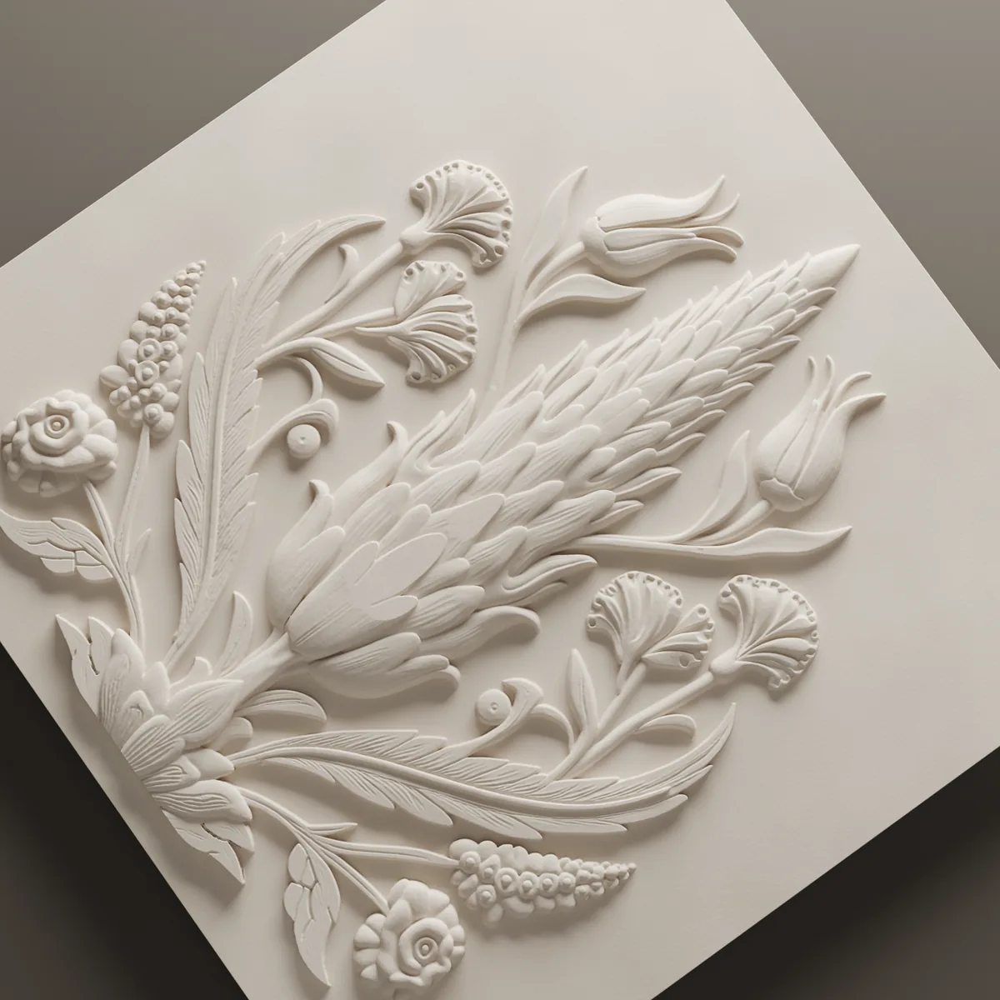
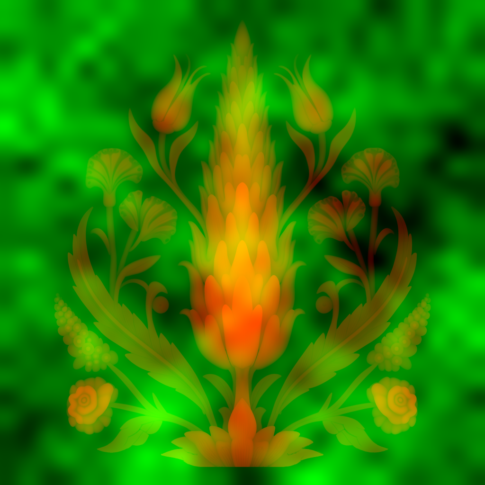

Cantus
The cypress, tulip, carnation and rose of the Iznik tile tradition, composed as a single panel with no repeat. It stands alone on a wall, or as the one accent among plain surfaces.

- Size
- 600 × 600 mm
- Relief
- 16 mm
- Layout
- Single panel, no repeat
- Material
- Lumina PMAG™


The pattern
Cantus gathers the four plants of the Iznik tile tradition, the cypress, tulip, carnation and rose, into a single panel. The motifs are not set in a repeat: the composition is built inside the panel’s own edges, and it begins and ends there. The surface reads as one picture on the wall rather than a strip of pattern.
The relief reaches 16 mm. That depth gives the edges of the motifs clear shadows and the leaves readable separations. From across a room the panel is a silhouette; close up it offers detail.
How it reads in light
The image at the top of the page is in live light. As the angle of the light changes, the trunk of the cypress, the tulip crowns and the rose petals come forward in turn. The same panel looks deep and animated in raking light and calm, almost flat, in head-on light; which of the two a wall gets depends on where it stands.
On the wall
Cantus is designed as a single 600 × 600 mm panel. It can hold a wall on its own, or serve as the one accent among plain surfaces. It carries no repeat meant for laying side by side; its strength is that it is complete in itself.
To see how this system would sit on your wall, send the wall dimensions.